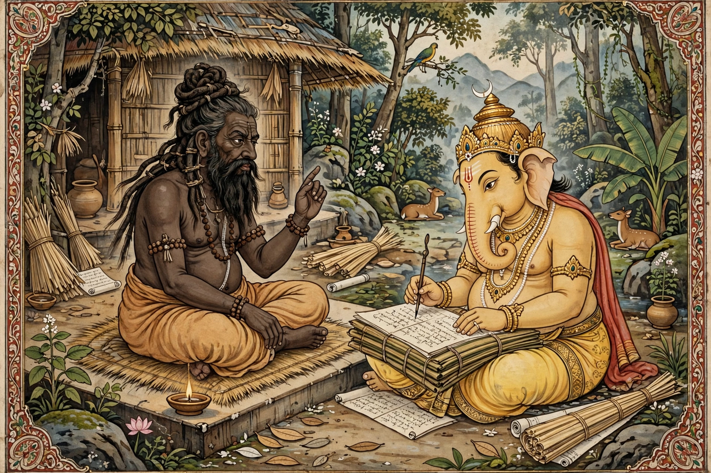

Vyasa
| Vyasa | |
|---|---|
 | |
| Other names | Krishna Dvaipayana; Vedavyasa |
| Parents | Parashara (father); Satyavati (mother) |
| Children | Dhritarashtra, Pandu, Vidura; Shuka |
| Known for | Compiling the Vedas; authoring the Mahabharata and the Puranas |
Vyasa (Sanskrit: व्यास, Vyāsa, "the compiler"), also known as Krishna Dvaipayana and Vedavyasa, is a revered sage in Hinduism, traditionally credited with dividing the single Veda into four parts, and with composing the Mahabharata, the eighteen major Puranas, and — in later tradition — the Brahma Sutras. Uniquely, he is both the author of the Mahabharata and a character within it: the grandfather of the warring Pandava and Kaurava princes.
Birth and life
According to the Mahabharata, Vyasa was born to the sage Parashara and Satyavati, a ferryman's daughter, on an island in the Yamuna river; his dark complexion and island birth gave him the name Krishna Dvaipayana. He grew up in the forest, mastered the Vedas, and lived as an ascetic. When Satyavati later became queen of Hastinapura and her son Vichitravirya died childless, she summoned Vyasa to father heirs on the widowed queens through the practice of niyoga. Thus were born Dhritarashtra, Pandu and — to a maidservant — the wise Vidura.
Works
Tradition holds that Vyasa arranged the primordial Veda into the Rigveda, Yajurveda, Samaveda and Atharvaveda, teaching each to a disciple — hence his title Vedavyasa, "divider of the Veda". He then composed the Mahabharata, dictating it, according to legend, to the god Ganesha, who wrote it down on condition that Vyasa never pause, while Vyasa stipulated that Ganesha must understand each verse before writing. Within the epic, Vyasa repeatedly intervenes: granting the charioteer Sanjaya divine sight to narrate the Kurukshetra war, counselling the combatants, and consoling the bereaved.
Guru Purnima
The full-moon day of Guru Purnima, when Hindus honour their teachers, is dedicated to Vyasa and is said to mark his birthday. Many Hindu traditions regard him as a chiranjivi, one of the immortals still present on earth, and some sects consider him a partial incarnation of the god Vishnu.